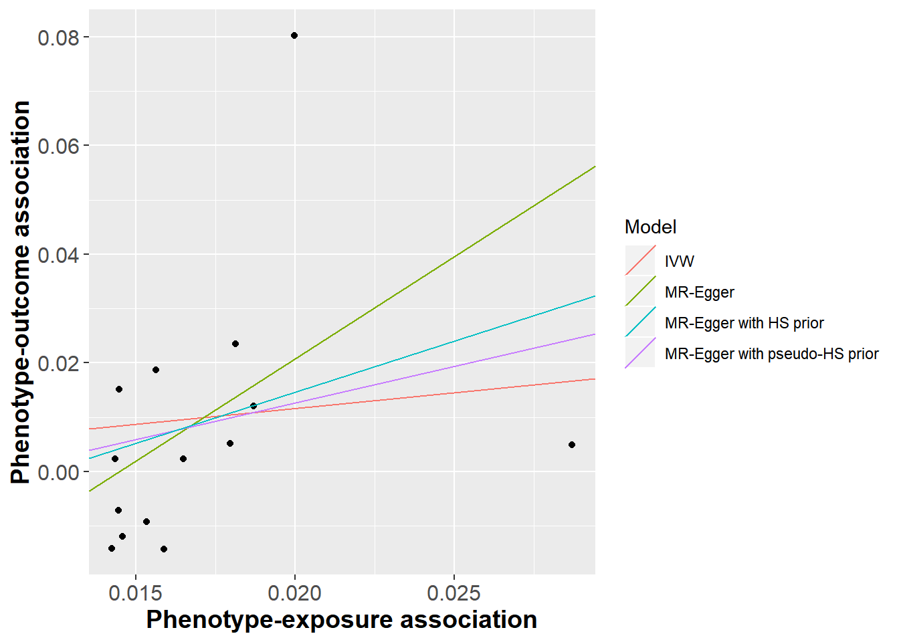

Bayesian estimation of the MR-Egger model using informative priors can reduce bias in the presence of pleiotropy.
Investigating a pseudo-horseshoe prior for the MR-Egger model
Okezie Uche Ikonne 1, 
o.uche-ikonne@lancaster.ac.uk
Frank Dondelinger2 Tom Palmer1
1 Department of Mathematics and Statistics, Lancaster University
2 Faculty of Health and Medicine, Lancaster University
Introduction
- The MR-Egger model can consistently estimate the causal effect in the presence of pleiotropy given the InSIDE assumption holds (Bowden, Davey Smith, and Burgess (2015)).
- Schmidt and Dudbridge (2017) used weakly informative priors for the MR-Egger model. Other authors have investigated alternative prior distributions in MR analyses (Berzuini et al. (2018)).
The objectives of this research work are to:
- implement Bayesian estimation of IVW and MR-Egger models for a range of prior distributions in an R package.
- investigate model performance for a range of simulated pleiotropic scenarios and a range of priors.
Methods
We implemented Bayesian estimation of the IVW and MR-Egger models in an R package
mrbayeswhich automates fitting these models in the JAGS software.We provide the user with a choice of priors or let them specify their own.
The MR-Egger model is written as; \[\frac{\Gamma_j}{\sigma_{y_j}^2} = \frac{\alpha}{{\sigma_{y_j}^2}} + \frac{\beta\gamma_j}{{\sigma_{y_j}^2}} + \varepsilon_j,\quad \varepsilon_j \sim N(0,\sigma^2)\]
Uninformative Prior \[p(\alpha) \sim N(0,1000),\ p(\beta) \sim N(0,1000),\ p(\sigma) \sim U(10,10)\]
Weakly Informative Prior \[p(\alpha) \sim N(0,1),\ p(\beta) \sim N(0,1),\ p(\sigma) \sim U(10,10)\]
Pseudo-Horseshoe Prior\[p(\alpha) \sim N(0,1),\ p(\beta) \sim C(0,1),\ p(\sigma) \sim IG(0.5,0.5)\]
Figure 1 shows the densities of the priors.
Results
Simulations
Example
- We fitted summary data models to a dataset investigating the effect of body mass index on insulin resistance (Richmond et al. 2017).
- We compared Bayesian MR-Egger model estimates from models including horseshoe priors from the horseshoe package (van der Pas et al. 2016).
- Results are presented in table 2 and figure 3.
Conclusion
- We present Bayesian estimation of the IVW and MR-Egger models in our
mrbayespackage. - In future work we could implement Bayesian estimation of MVMR models and perform estimation using other programs such as Stan.
References
Berzuini, Carlo, Hui Guo, Stephen Burgess, and Luisa Bernardinelli. 2018. “A Bayesian Approach to Mendelian Randomization with Multiple Pleiotropic Variants.” Biostatistics.
Bowden, Jack, George Davey Smith, and Stephen Burgess. 2015. “Mendelian randomization with invalid instruments: effect estimation and bias detection through Egger regression.” International Journal of Epidemiology 44 (2): 512–25. https://dx.doi.org/10.1093/ije/dyv080.
Richmond, Rebecca, Kaitlin Wade, Laura Corbin, Jack Bowden, Gibran Hemani, Nicholas Timpson, and George Davey Smith. 2017. “Investigating the role of insulin in increased adiposity: Bi-directional Mendelian randomization study.” bioRxiv, 155739. https://doi.org/10.1101/155739.
Schmidt, A F, and F Dudbridge. 2017. “Mendelian randomization with Egger pleiotropy correction and weakly informative Bayesian priors.” International Journal of Epidemiology 47 (4): 1217–28. https://dx.doi.org/10.1093/ije/dyx254.
van der Pas, Stephanie, James Scott, Antik Chakraborty, and Anirban Bhattacharya. 2016. Horseshoe: Implementation of the Horseshoe Prior. https://CRAN.R-project.org/package=horseshoe.
Figures and Tables
Figure 1: Density of alternative prior distributions implemented in our package.
| IVW | MR-Egger | MR-Egger with pseudo-HS prior | MR-Egger with horseshoe prior | |
|---|---|---|---|---|
| Estimate | 0.1607 | 0.0293 | 0.0302 | 0.0374 |
| Power | 1.0000 | 0.1044 | 0.0950 | 0.0994 |
| Coverage | 0.0036 | 0.8946 | 0.9046 | 0.9044 |
Figure 2: Distribution of causal effect estimates under directional pleiotropy.

Figure 3: Scatter plot of genotype-disease versus genotype-phenotype estimates for the effect of BMI on insulin resistance.
| Model | Coefficient | Estimate | 95% Confidence/Credible Interval |
|---|---|---|---|
| IVW | Slope | 0.5797 | -0.1985, 1.3579 |
| MR-Egger | Intercept | -0.0544 | -0.1258, 04 |
| MR-Egger | Slope | 3.7586 | -0.4793, 7.9966 |
| MR-Egger with pseudo-HS prior | Intercept | -0.0143 | -0.0862, 0.0327 |
| MR-Egger with pseudo-HS prior | Slope | 1.3488 | -1.2967, 5.6133 |
| MR-Egger with HS prior | Intercept | -0.023 | -0.0997, 0.0248 |
| MR-Egger with HS prior | Slope | 1.8779 | -0.9604, 64 |